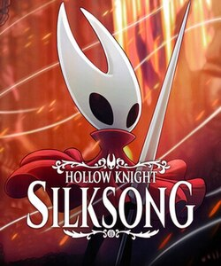
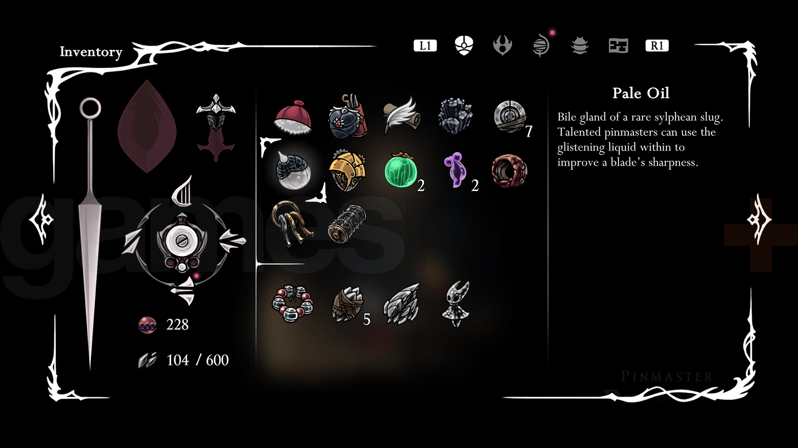
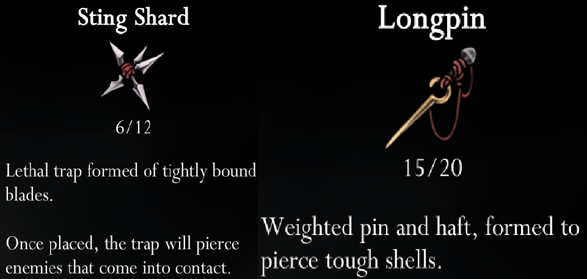
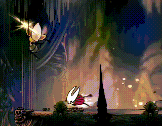

What is Hollow Knight: Silksong?
Hollow Knight: Silksong (2025) is a 2D action-adventure video game developed by Australian studio Team Cherry. It is the sequel to Hollow Knight (2017), and is designed to expand upon the lore and gameplay of the original with a new original setting.

The main function of Silksong is to provide an immersive experience structured around exploration and adaptation in a vast, interconnected world. The game is part of the "Metroidvania" genre (derived from the classic titles Metroid and Castlevania), defined by open-ended paths, environmental storytelling, and the gradual acquisition of abilities that unlock new areas.
Game Design
The player interacts with the system via a controller or keyboard, issuing inputs that are processed by the game engine. These inputs influence the state of the player character and the surrounding environment, with updates occurring continuously at a stable frame rate (60fps at the lowest). The movement and traversal subsystem is closely integrated with both the player character and the environment. Movement is governed by physics calculations that determine velocity, acceleration, and collision outcomes.

During main gameplay, the interface is minimal, providing status information through a limited set of on-screen icons in the top left corner. A more advanced menu documenting held items, maps, current tasks and other information is accessible with the press of a button, and pauses gameplay.
Unique Mechanics
A defining feature of this system is the usage of silk, a resource that is derived from hitting enemies and can be used for both healing and special attacks.This mechanic creates a constraint that requires players to balance offensive and defensive actions; a similar system exists in Hollow Knight, but in Silksong it is executed at a far greater pace and can require more restraint.

Silksong also incorporates a crafting system in which players collect materials and create tools that enhance gameplay. Tools have limited usage between checkpoints, and not only does acquiring them cost materials, but using them does as well. This system adds a layer of resource management, requiring players to make strategic decisions about how resources are used.
Visuals
Visually, the product is a hand-drawn, side-scrolling experience rendered in high resolution. This world, Pharloom, is broken up into interconnected zones, each composed of hand-drawn assets arranged in layered compositions (parallax) that move differently alongside the player to create a sense of depth and immersion.
The visuals are highly responsive to the game’s processing; for example, enemy behaviors are based on condition-based artificial intelligence, allowing them to quickly transition between unique animations such as idle, patrolling, attacking, and dodging.
